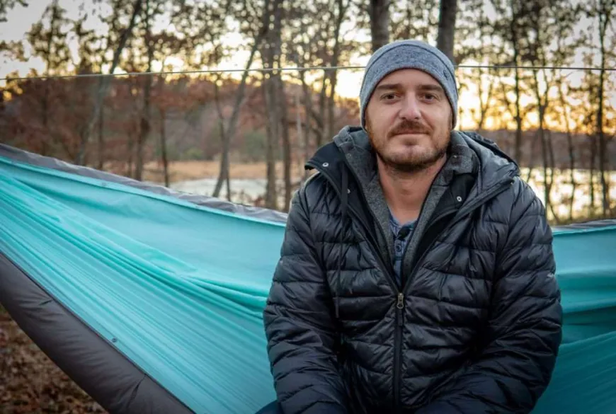
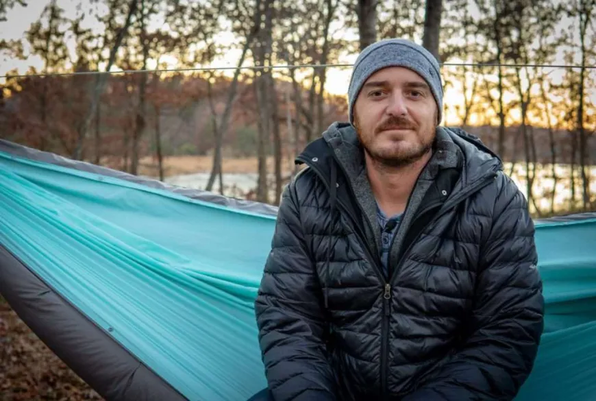

WASD to move
Left arrow & right arrow to turn
SPACE to dash, costs one food to dash.
N to SUPER dash, costs four food to super dash.
E to eat (Make sure not to eat when not pointed toward a food!)
F to shoot a bullet !WARNING! bullets tend to rapture! You need to raise up and eat blocks to get bullets
B to place a block at cursor, hold to chose its location and use up and down arrows to raise or lower it. One block costs one food
Goal of the game is to defeat Jack. Collect food so you can shoot at jack and make a structure.
Jack is mostly harmless but he NEEDS to be stopped. Please kill him. He tends to throw baked beans at you. Please shoot jack.
Z to go to the title screen.
congratulations, you defeated Jack.
You won the game.
Restart the game or go outside.
 
